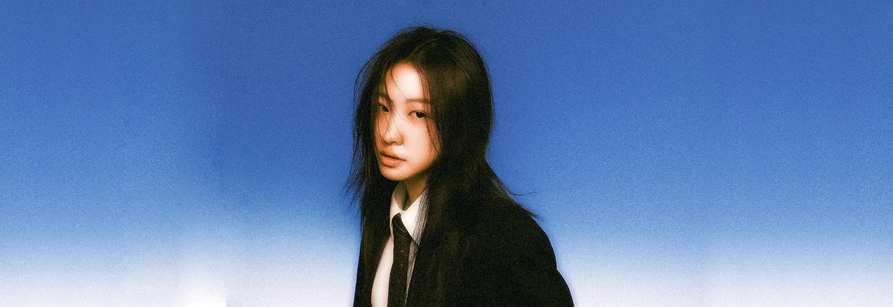

LAYOUTS
WIDGETS
LENS
Shape
Size
LOOK
Wallpaper
Accent
Film grain
On
LAYOUT
Start over
Reset layout
HOW TO
Move the mouse (or your finger) over the wallpaper to see the photo clearly through the lens. Click / tap to pin it.
Start (bottom centre) has every app; right-click an app to pin it. Widgets sit on the far left of the taskbar.
Drag a window by its title bar. Drop it at the top edge to maximise, or the left / right edge to fill half the screen.
Right-click the desktop for new files and folders; drop files from your computer onto it.
Swipe down for notifications and quick settings, up for all apps, sideways for more pages.
Drag the lens rectangle with your finger, or tap the wallpaper to move it.
Long-press to rearrange or remove. Long-press in the app drawer to add an app to Home.
KEYS
W
widgets
B
next wallpaper
L
lens shape ·
[
]
lens size
P
pin lens
H
zen mode ·
Esc
close menus
?
this help
Drag to move · − to remove
+ Widgets
Done
Long-press an app to add it to Home
⚙
🔅
🔆
Notifications
Clear all
ADD A WIDGET